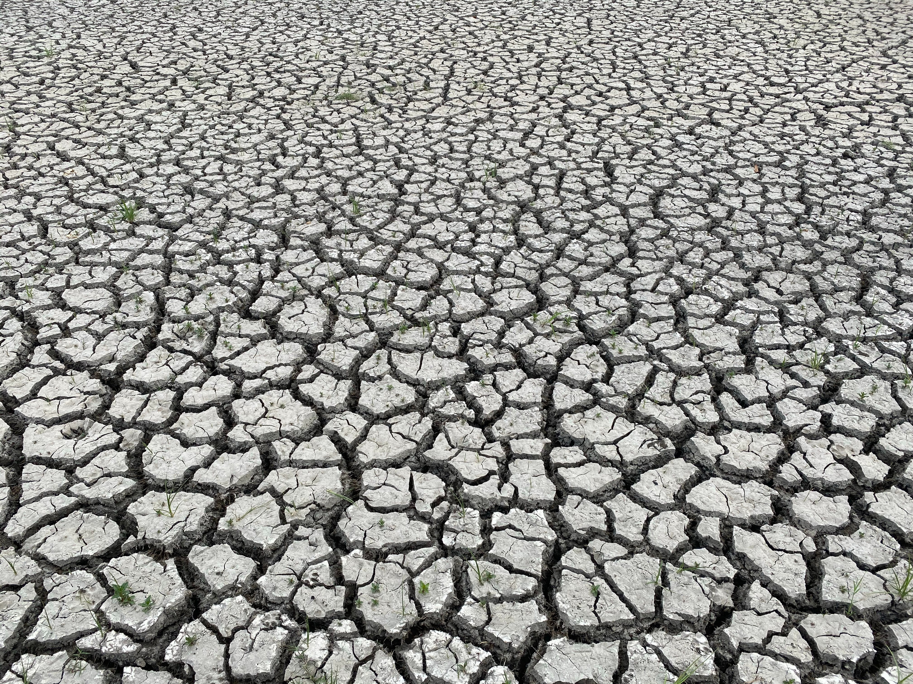

Nossa missão
Na ClimateGuardian Platform, nossa missão é fornecer uma plataforma abrangente e acessível para conscientização, educação e ação contra os perigos do aquecimento global. Nosso objetivo é capacitar indivíduos, comunidades e organizações a compreenderem os impactos das mudanças climáticas, adotarem práticas sustentáveis e colaborarem em iniciativas significativas para mitigar os efeitos adversos no meio ambiente e na sociedade. Através de recursos educacionais, ferramentas interativas e conexões com a comunidade global, buscamos inspirar e capacitar os guardiões da Terra a atuarem como agentes de mudança, protegendo e preservando nosso planeta para as gerações presentes e futuras.


- 